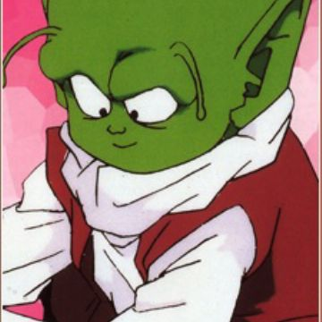

Dendé

Dendé (デンデ, Dende) es un pequeño namekiano, que vivía en el poblado de Moori, junto a su hermano Scargo y otros tantos de su especie. Es el hijo 108 del Gran Patriarca y posteriormente Dios de la Tierra, sustituyendo a Dios.
Regresar